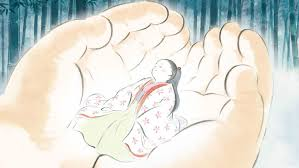
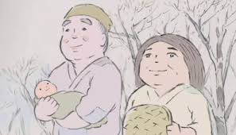
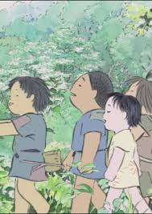
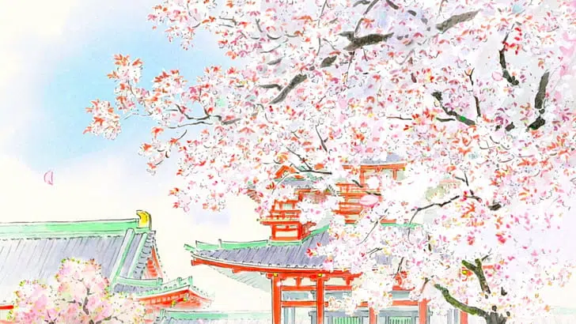
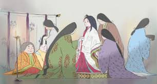
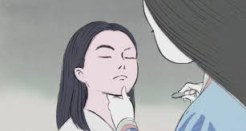
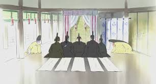
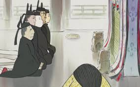

Érase una vez en un remoto pueblo de china, donde una pareja de ancianos vivían el día a día
cultivando bambús(planta regional de china), la esposa hacía los mejores platillos con el cultivo y
el esposo fabricaba muebles o lo que haga falta.

 Rápidamente, el anciano fue a contarle a su esposa aquel hallazgo, su esposa quedo asombrada, pero
tuvieron que arroparla y darle de comer, el problema vino aquí, ya que la esposa al ser ya de una
edad elevada, no tenía leche en sus pechos, iban de camino a buscar a alguna mama nodriza(mama que
amamanta en caso la mama real no tenga leche), pero o sorpresa, cuando iban de camino a la mama le
crecieron los
Rápidamente, el anciano fue a contarle a su esposa aquel hallazgo, su esposa quedo asombrada, pero
tuvieron que arroparla y darle de comer, el problema vino aquí, ya que la esposa al ser ya de una
edad elevada, no tenía leche en sus pechos, iban de camino a buscar a alguna mama nodriza(mama que
amamanta en caso la mama real no tenga leche), pero o sorpresa, cuando iban de camino a la mama le
crecieron los
 La bebe misteriosa cada vez crecía más, asombrosamente crecía muy rápido, comenzó a caminar antes de
cumplir el primer año, un día hizo unos amigos, unos niños de la zona que la vieron, como era tan
hermosa la niña, se hicieron amigos todos, comenzaron a llevarla con ellos cada que salían a jugar,
al comienzo el papa anciano era muy sobre protector, pero con el tiempo entendió que era parte de la
vida y tenía que poco a poco dejarla crecer, igualmente la cuidaba mucho.
Un día, cuando el anciano salió a recolectar bambú, volvió a ver la luz misteriosa, al acercarse,
vio que había ropas y mucho oro. Con esto se dio cuenta de que el cielo le estaba diciendo un
mensaje..., el mensaje era... ""Por favor, educa a la niña y conviértela y hazla vivir como
princesa.
Llego el día donde los príncipes llegaron al castillo, cada uno se presentó y le expreso su gran
amor. El primero le dijo que su amor era tan grande como el árbol de diamantes del monte Tatsuo.
El segundo le dijo que lo que sentía por ella era tan hermoso y fuerte como la armadura de oro y
diamantes del gran reino de los cielos.
El tercero le dijo que su amor era tan hermoso como la piedra lunar.
La bebe misteriosa cada vez crecía más, asombrosamente crecía muy rápido, comenzó a caminar antes de
cumplir el primer año, un día hizo unos amigos, unos niños de la zona que la vieron, como era tan
hermosa la niña, se hicieron amigos todos, comenzaron a llevarla con ellos cada que salían a jugar,
al comienzo el papa anciano era muy sobre protector, pero con el tiempo entendió que era parte de la
vida y tenía que poco a poco dejarla crecer, igualmente la cuidaba mucho.
Un día, cuando el anciano salió a recolectar bambú, volvió a ver la luz misteriosa, al acercarse,
vio que había ropas y mucho oro. Con esto se dio cuenta de que el cielo le estaba diciendo un
mensaje..., el mensaje era... ""Por favor, educa a la niña y conviértela y hazla vivir como
princesa.
Llego el día donde los príncipes llegaron al castillo, cada uno se presentó y le expreso su gran
amor. El primero le dijo que su amor era tan grande como el árbol de diamantes del monte Tatsuo.
El segundo le dijo que lo que sentía por ella era tan hermoso y fuerte como la armadura de oro y
diamantes del gran reino de los cielos.
El tercero le dijo que su amor era tan hermoso como la piedra lunar.
 Su castigo por desear nunca volver seria ese, vivir en la luna, en el reino de los cielos, y
terminarían borrándole la memoria para olvidar todo lo impuro de este mundo.
FIN
Su castigo por desear nunca volver seria ese, vivir en la luna, en el reino de los cielos, y
terminarían borrándole la memoria para olvidar todo lo impuro de este mundo.
FIN

Un día inesperado el anciano, en su día de trabajo, vio una misteriosa luz, a lo lejos, al acercarse
cayó un trueno brillante, el anciano se asustó mucho, pero después de aquel susto, el anciano la
pudo ver, era una bebe muy bonita, no se explicaba de donde pudo haber salido, pero era obvio de que
era obra del cielo.

pechos y la leche comenzó a salir, el bebe fue alimentada y ella estaba muy contenta, pero fue raro
lo que paso después porque, mientras pasaban los minutos... , sí, los minutos, el bebe creció más y
más. Se hacía más pesada con el tiempo(muy poco tiempo), esto solo debería ser obra del cielo, los
ancianos llegaron a la conclusión de que tal vez el cielo los había bendecido, con esta bebe,
preciosa.

El anciano decidió que esto sería lo mejor, la niña no podría ser una princesa en el lugar rural
donde vivían en el campo donde estaban nunca podría ser una princesa, y nunca podría tener los
modales de una princesa, entonces comenzó a ir al pueblo con todo el oro obtenido por el cielo,
comenzó a comprar tierras y construir un castillo para el bebe, la princesa Kaguya

Cuando Kaguya cumplió 15 fue llevada a la ciudad por sus padres adoptivos(los ancianos).
En la ciudad, comenzó a vestir de forma diferente, le enseñaron modales, formas de comportarse y
todo lo que necesita una princesa, Kaguya se comenzó a poner más linda, los rumores iban creciendo
por toda la ciudad, y la gente comenzaba a conocer más a Kaguya.


Con el pasar del tiempo Kaguya comenzaba a aburrirse de esa vida llena de lujos, ella no encontraba
el gusto de llevar esa vida, no era ella misma, estaba siendo forzada a ser alguien que no era,
entonces comenzó a cansarse, pero un día su padre muy contento le había dicho que 3 príncipes habían
escuchado sobre su belleza incomparable, entonces venían para su castillo para poder hacerla su
esposa.

Kaguya al terminar de escuchar les dijo lo siguiente: "Así como su amor por mí es equivalente a un
objeto, entonces el primero que me traiga alguno de esos objetos raros que menciono, tomara mi
mano".
Pero estos objetos solo eran mitos, no existían en realidad, pero así estaban las cosas.

Llego el día, y los príncipes volvieron con los supuestos tesoros que eran un mito.
El primer príncipe trajo el árbol de diamantes... pero resulto ser un fraude, mando a construirlo a
unos artesanos, y no les pago.
El segundo trajo la armadura, pero solo era una copia, ya que esta armadura no existe en realidad
Kaguya pensaba que el tercero traería otra falsaria, pero el sí consiguió la piedra lunar, Kaguya
asombrada no podía creerlo.
El príncipe quería hacerla suya a Kaguya, entonces Kaguya grito desde el fondo de su corazón, no
quiero estar más aquí, con estos sucios humanos.
Este grito llegó al reino de los cielos y el reino le comunica a Kaguya que en 3 días irían por
ella, para llevársela y nunca más volvería a la tierra, nunca más vería a sus padres, amigos,
conocidos.